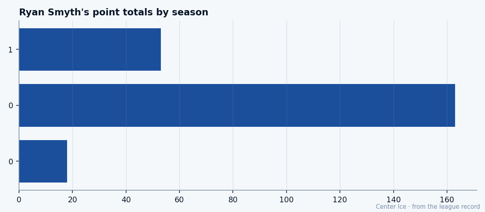

A Trophy on the Shelf: what the Hart did to Ryan Smyth
74 goals, 163 points, the Hart at 27. One year later, he's at 53 points in 32 games, the Index is minus one, and his contract runs out in July.
 Tomáš VránaProfile writer · The Sweater
Tomáš VránaProfile writer · The Sweater Ryan Smyth85 won the Hart Trophy last spring on a line that read 74 goals, 89 assists, 163 points in 82 games. He was 27. This season, 32 games in, he has 27 goals and 53 points. Edmonton is 12-11-1, fourth in the
Ryan Smyth85 won the Hart Trophy last spring on a line that read 74 goals, 89 assists, 163 points in 82 games. He was 27. This season, 32 games in, he has 27 goals and 53 points. Edmonton is 12-11-1, fourth in the  Edmonton Oilers Northwest Division, riding a three-game win streak. The Development Index has him at minus one. His overall reads 81 against a base of 89. The contract pays him $2.50M through next July.
Edmonton Oilers Northwest Division, riding a three-game win streak. The Development Index has him at minus one. His overall reads 81 against a base of 89. The contract pays him $2.50M through next July.
The Hart season was the best of his career. The Index says he is running a touch below even that. The room knows what 163 points commands on the open market, and it knows the man in the stall next to the equipment room has one year left.
Banff to Moose Jaw to sixth overall
Smyth was born in Banff, Alberta, in February 1976, in a town that sits in the mountains and gets very cold in January. He played junior hockey with Moose Jaw in the WHL. In 1993-94 he scored 50 goals and put up 105 points in 72 games. Edmonton drafted him sixth overall in the first round of 1994.
He went back to Moose Jaw for one more year. Forty-one goals, 86 points in 50 games. Then he crossed over.
His first NHL shift came on January 22, 1995, on the road against the  Los Angeles Kings Kings. He scored his first goal against Trevor Kidd of the
Los Angeles Kings Kings. He scored his first goal against Trevor Kidd of the  Calgary Flames Flames on November 24, 1995, on the power play. By 1996-97, he had 39 goals and 61 points in 82 games. His 20 power-play goals tied Wayne Gretzky's team record for a single season, a mark set in 1983-84. He scored his first of five career hat tricks on October 8, 1996.
Calgary Flames Flames on November 24, 1995, on the power play. By 1996-97, he had 39 goals and 61 points in 82 games. His 20 power-play goals tied Wayne Gretzky's team record for a single season, a mark set in 1983-84. He scored his first of five career hat tricks on October 8, 1996.
The background sheet carries one other line that matters here. On August 14, 2003, Smyth and the Oilers avoided arbitration by signing a two-year contract. That contract is the one he is playing on right now. The last year. The year he is trying to finish.

The 163-point year and the 53-point one
Last season, Smyth played every game. 82. He scored 74 goals and added 89 assists. The 163 points won him the Hart. In 12 playoff games, he added 10 goals and 18 points.
This season he is at 27 goals and 26 assists in 32 games, logging 22.7 minutes a night. The goals are still coming. The assists have dropped. Last season he paced 1.99 points a game, which is a number no one sustains. The 53 points in 32 puts him at 1.66, still well above a point a game. The Index reads minus one because the base is 89, and even an 81-year-old Smyth is one of the top skaters in the league.
The grades on the Book tell you what he is. HERO at 89, puckhandling at 87, shot power at 86, deking at 85, endurance at 84, speed at 84. A player who gets the puck, keeps the puck, shoots it hard, and does it for a long shift. Fighting at 51, backcheck speed at 53, faceoffs at 60. The weaknesses are in the corners and on the dot. He is not a player you put out to win draws. He is a player you put out to score.
The room around him
The best player on Edmonton's roster, by overall grade, is goaltender  Tommy Salo88 at 85. The next-best skater is center
Tommy Salo88 at 85. The next-best skater is center  Mike Comrie84 at 80. Smyth, even at 81 with the Index dragging him down, is still the top forward on the depth chart by one point.
Mike Comrie84 at 80. Smyth, even at 81 with the Index dragging him down, is still the top forward on the depth chart by one point.
Edmonton has scored 124 goals and allowed 134 in 32 games. The offense is adequate. The defense is not. The team sits fourth in a division  Colorado Avalanche has already pulled away from, and the three-game win streak is the only thing keeping the room from feeling like a long walk to January.
Colorado Avalanche has already pulled away from, and the three-game win streak is the only thing keeping the room from feeling like a long walk to January.
Smyth's morale reads 89. He is not unhappy. But the numbers around him are not what they were last season, and the assists tell you why. When a team cannot protect a lead, the open ice comes less often, and the second assists dry up.
"I've been here a long time," Smyth said. "The team's what it is. I go out and try to score. That's what they pay me for."
July
The potential grade on the Book is 69. The base is 89. That means the Bureau thinks his best hockey is behind him, and the current form says he is running a notch below even that ceiling. He is 28. The contract expires in a year.
He has played his entire career in Edmonton. He was drafted sixth overall in 1994, went back to junior for a year, came back, and has been here ever since. The hat trick against  San Jose Sharks that broke Gretzky's team record. The 39-goal season. The 20 power-play goals that tied a record set in 1983-84. The Hart at 27. All in the same sweater.
San Jose Sharks that broke Gretzky's team record. The 39-goal season. The 20 power-play goals that tied a record set in 1983-84. The Hart at 27. All in the same sweater.
A two-year deal signed in arbitration-avoidance mode in August 2003, at $2.50M, is the contract of a very good player. The Hart season was the contract of a great one. The Index says he is running at the very good one right now. The goals are coming, 27 in 32 games. The assists are not. And the man from Banff who tied Gretzky's power-play record, who won the Hart, plays 22.7 minutes a night in a building that gets very cold in January.